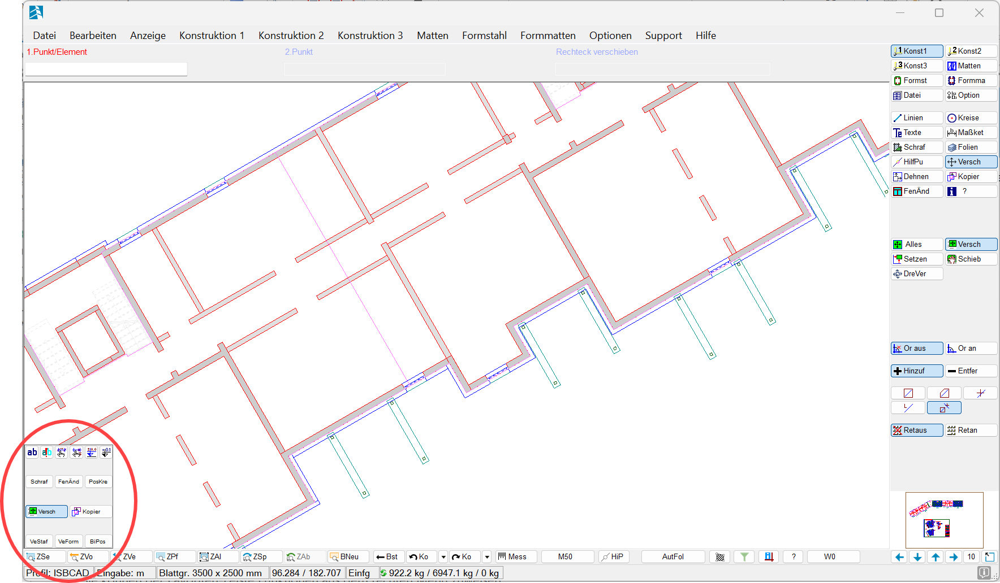
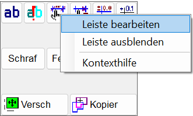
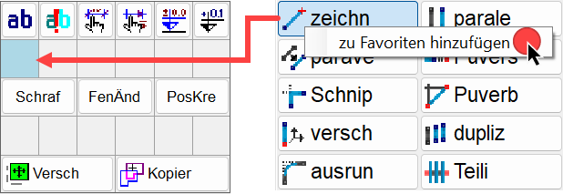
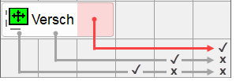

In der Favoritenleiste können Sie häufig verwendete Funktionen für den Schnellzugriff als Verknüpfungen platzieren. Die Leiste kann permanent eingeblendet bleiben, sodass sich die Funktionen durch Anklicken der Verknüpfungen jederzeit aufrufen lassen.

·Sie können der Favoritenleiste Funktionen aus dem Funktionsbereich (Menüs 1 - 3) zuweisen. Darüber hinaus können auch Funktionen hinzugefügt werden, die oben links unter der aktiven Abfrage angeboten werden und für die ein Hotkey definiert werden kann (z. B. [Konst 1 | Linien | zeichn | RechEc]).
·Wenn Sie den Mauscursor über eine Verknüpfung bewegen, zeigt Ihnen ein Tooltip an, um welche Funktion es sich handelt.
·Die Favoritenleiste ist eine computerspezifische Einstellung, die in einer ISBCAD-Konfigurationsdatei gespeichert wird. Diese Datei wird nicht im Profil angelegt, kann aber gesichert und auf andere Rechner übertragen werden. Siehe: Sichern und Einlesen der ISBCAD Konfiguration
Optionen im Dialog "Einstellungen"
In den Einstellungen [Option | Einste] können Sie:
·die Favoritenleiste deaktivieren oder aktivieren,
·die Favoritenleiste entweder am linken oder am rechten Rand des Zeichenbereiches fixieren,
·angeben, aus wie vielen Spalten und Zeilen die Favoritenleiste bestehen soll,
·die Textgröße mit dem Regler für die Größe von Menütexten einstellen.
Weitere Informationen finden Sie unter Einstellungen → Favoritenleiste.
Favoritenleiste bearbeiten
§Klicken Sie in der Favoritenleiste mit der rechten Maustaste eine Verknüpfung oder einen leeren Bereich an.
§Wählen Sie im Kontextmenü den Eintrag Leiste bearbeiten.
 |
Der Bearbeitungsmodus wird aktiviert. In der Favoritenleiste werden die Gitternetzlinien eingeblendet.
Um eine Verknüpfung hinzuzufügen
Die Funktion wird der blau markierten Tabellenzelle als Verknüpfung mit Icon-Darstellung hinzugefügt. Sie können die Einfügeposition ändern, indem Sie vor dem Hinzufügen eine andere Zelle anklicken.
§Klicken Sie mit der rechten Maustaste eine Funktion an und wählen Sie im Kontextmenü den Eintrag zu Favoriten hinzufügen.
Die Verknüpfung wird hinzugefügt.
 |
Um die Darstellung zu ändern
§Klicken Sie die Verknüpfung mit der rechten Maustaste an. Fahren Sie mit der Maus über den Eintrag Darstellung (Icon, Text, Icon+Text) und wählen Sie aus, wie die Verknüpfung dargestellt werden soll.
Wenn eine größere Darstellung wie "Icon+Text" nicht möglich ist, ist der Eintrag ausgegraut. Erhöhen Sie in diesem Fall die Anzahl der Spalten in den Einstellungen, oder verschieben Sie die Verknüpfung an eine Position, die nach rechts genügend Raum bietet.
Benötigte Zellen:
-Darstellung als Icon = 1 Tabellenzelle
-Darstellung als Text = 2 Tabellenzellen
-Darstellung als Icon + Text = 3 Tabellenzellen
Um eine Verknüpfung zu verschieben
§Klicken und halten Sie die linke Maustaste auf einer Verknüpfung gedrückt und verschieben Sie sie an eine andere Position.
Bei der Darstellung Text + Icon z. B. gibt es drei Positionen, die Sie anklicken können (die linke, mittlere und rechte Tabellenzelle). Die angeklickte Position entspricht dem Einfügepunkt. Wenn Sie z. B. eine Verknüpfung (Text + Icon) in die letzte Zelle am rechten Rand verschieben wollen, klicken Sie beim Verschieben die rechte Tabellenzelle der Verknüpfung an, um sie am rechten Rand platzieren zu können.
 |
Um eine Verknüpfung zu entfernen
§Klicken Sie die Verknüpfung mit der rechten Maustaste an und wählen Sie im Kontextmenü den Eintrag Entfernen.
Um den Bearbeitungsmodus zu beenden
Der Bearbeitungsmodus muss beendet werden, damit die Verknüpfungen genutzt werden können.
§Klicken Sie außerhalb der Favoritenleiste in den Zeichenbereich.
–Die Gitternetzlinien in der Favoritenleiste werden ausgeblendet. Sie können die Verknüpfung nun anklicken.
–Alternativ: Klicken Sie in der Favoritenleiste mit der rechten Maustaste eine Verknüpfung oder einen leeren Bereich an. Wählen Sie anschließend im Kontextmenü den Eintrag Bearbeitung beenden.
Optionen in den Kontextmenüs
Entfernen
Entfernt die zuvor mit der rechten Maustaste angeklickte Verknüpfung.
Darstellung (Icon, Text, Icon + Text)
Ändert die Darstellung der Verknüpfung:
·Icon
·Text
·Icon + Text
Leiste bearbeiten
Aktiviert den Bearbeitungsmodus. Im Bearbeitungsmodus werden in der Favoritenleiste Gitternetzlinien eingeblendet. Verknüpfungen können hinzugefügt, entfernt, verschoben und in der Darstellung geändert werden.
Bearbeitung beenden
Deaktiviert den Bearbeitungsmodus. Die Verknüpfungen können genutzt werden.
Leiste ausblenden
Blendet die Favoritenleiste aus. Sie können die Favoritenleiste in [Option | Einste | Favoritenleiste] wieder einblenden, indem Sie den Haken setzen. Beim Ausblenden bleibt Ihre aktuelle Zusammenstellung der Schaltflächen erhalten und wird beim erneuten Einblenden wieder angezeigt.
Kontexthilfe
Öffnet diesen Artikel.
Siehe auch: